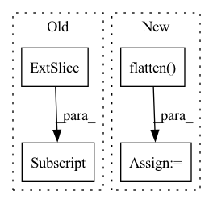

Pattern ID :13716
Before Change
y_true:
unilm式样，需要手动把非seq2seq部分mask掉
"""
y_mask = (y_true[:, 1:] != tokenizer._token_pad_id).long()
y_true = y_true[:, 1:]// 目标token_ids
y_pred = y_pred[:, :-1, :] // 预测序列，错开一位
After Change
y_pred = y_pred[:, :-1, :] // 预测序列，错开一位
y_pred = y_pred.reshape(-1, y_pred.shape[-1])
y_true = y_true.flatten()
return super().forward(y_pred, y_true)
model.compile(loss=CrossEntropyLoss(ignore_index=0), optimizer=optim.Adam(model.parameters(), 1e-5))
In pattern: SUPERPATTERN
Frequency: 7
Non-data size: 4
Instances Fragment ID: 45828699
Project Name: tongjilibo/bert4torch
Commit Name: c440dc0826c9e401f8d3de3922cfeea3cec1d79e
Time: 2022-12-05
Author: tongjilibo@163.com
File Name: examples/pretrain/gpt_lm_pretrain/pretrain_gpt_lm.py
M Class Name: CrossEntropyLoss
N Class Name: CrossEntropyLoss
M Method Name: forward(3)
N Method Name: forward(3)
M Parent Class: nn.CrossEntropyLoss
N Parent Class: nn.CrossEntropyLoss
M File Name: examples/pretrain/gpt_lm_pretrain/pretrain_gpt_lm.py
N File Name: examples/pretrain/gpt_lm_pretrain/pretrain_gpt_lm.py
M Start Line: 66
M End Line: 71
N Start Line: 66
N End Line: 70
Before Change
if i == 0:
rec_features.append(rec_feature[:, :inputs[i].size(1)])
else:
rec_features.append(rec_feature[:, \
inputs[i-1].size(1):inputs[i-1].size(1)+inputs[i].size(1)] )
"""
if i == 0:
rec_features.append(rec_feature[:, :outs[i].size(-1)])After Change
fuse = self.fuse(outs, training=training)
logit = self.head(fuse, training=training)
sizes = [torch.flatten( ii,start_dim=1) .size(1) for ii in inputs]
rec_features = []
if training:
rec_feature = self.refiner(fuse, training=training)
curr=0
for i in range(input_num):
if self.has_padding:
if i == 0:
rec_features.append(rec_feature[:, :inputs[0][i].size(1)])
else:
rec_features.append(rec_feature[:, \
inputs[0][i-1].size(1):inputs[0][i-1].size(1)+inputs[i].size(1)])
else:
if i == 0:
rec_features.append(rec_feature[:, :sizes[0]])
curr = sizes[0]
else:
rec_features.append(rec_feature[:, \
curr:curr+sizes[i]])
curr += sizes[i]
"""
if i == 0:
rec_features.append(rec_feature[:, :outs[i].size(-1)]) Fragment ID: 45828683
Project Name: pliang279/multibench
Commit Name: 72e3344b766884b9160fd383b13945be06819481
Time: 2021-06-05
Author: blairc@andrew.cmu.edu
File Name: training_structures/Contrastive_Learning.py
M Class Name: MMDL
N Class Name: MMDL
M Method Name: forward(3)
N Method Name: forward(3)
M Parent Class: nn.Module
N Parent Class: nn.Module
M File Name: training_structures/Contrastive_Learning.py
N File Name: training_structures/Contrastive_Learning.py
M Start Line: 39
M End Line: 52
N Start Line: 37
N End Line: 56
Before Change
strided_matrix_2 = torch.sparse_coo_tensor(
strided_indices, strided_values, dtype=dtype)
strided_matrix = convolution_matrix.to_dense()[strided_rows, :]
return strided_matrix.to_sparse()
After Change
output_columns, output_rows)
strided_rows = element_numbers[::stride, ::stride]
strided_rows = strided_rows.flatten()
// TODO: finish me!
indices = convolution_matrix.coalesce().indices().numpy()
values = convolution_matrix.coalesce().values().numpy() Fragment ID: 45828698
Project Name: v0lta/pytorch-wavelet-toolbox
Commit Name: f659f1a0eacbd03f1438d0c70729ce7e95eb9ea0
Time: 2021-09-13
Author: moritz.wolter@scai.fraunhofer.de
File Name: src/ptwt/matmul_transform_2d.py
M Class Name: AnonimousClass
N Class Name: AnonimousClass
M Method Name: construct_strided_conv2d_matrix(5)
N Method Name: construct_strided_conv2d_matrix(5)
M Parent Class:
N Parent Class:
M File Name: src/ptwt/matmul_transform_2d.py
N File Name: src/ptwt/matmul_transform_2d.py
M Start Line: 80
M End Line: 113
N Start Line: 88
N End Line: 127
Before Change
// add noise
noise = torch.randn_like(x)
x = x_mean + diffusion[:, None, None, None] * np.sqrt(-dt) * noise
return x, x_mean
After Change
dt = -1.0 / len(self.timesteps)
beta_t = self.config.beta_min + t * (self.config.beta_max - self.config.beta_min)
beta_t = beta_t.flatten()
while len(beta_t.shape) < len(x.shape):
beta_t = beta_t.unsqueeze(-1)
drift = -0.5 * beta_t * x
diffusion = torch.sqrt(beta_t)
drift = drift - diffusion**2 * score
x_mean = x + drift * dt
// add noise Fragment ID: 45828702
Project Name: huggingface/diffusers
Commit Name: bd8df2da89d99f630e5aa2ddb8f8cb45456561f1
Time: 2022-09-27
Author: kashif.rasul@gmail.com
File Name: src/diffusers/schedulers/scheduling_sde_vp.py
M Class Name: ScoreSdeVpScheduler
N Class Name: ScoreSdeVpScheduler
M Method Name: step_pred(5)
N Method Name: step_pred(4)
M Parent Class: SchedulerMixin,ConfigMixin
N Parent Class: SchedulerMixin,ConfigMixin
M File Name: src/diffusers/schedulers/scheduling_sde_vp.py
N File Name: src/diffusers/schedulers/scheduling_sde_vp.py
M Start Line: 61
M End Line: 75
N Start Line: 51
N End Line: 83
Before Change
def forward(self, user, item):
user = torch.from_numpy(self.interaction_matrix[user.cpu()].todense()).to(self.device)
item = torch.from_numpy(self.interaction_matrix[:, item.cpu()] .todense()).to(self.device).t()
user = self.user_linear(user)
item = self.item_linear(item)
After Change
user = self.get_user_embedding(user)
// Following lines construct tensor of shape [B,n_users] using the tensor of shape [B,H]
col_indices = self.history_user_id[item].flatten()
row_indices = torch.arange(item.shape[0]).to(self.device).repeat_interleave(self.history_user_id.shape[1], dim=0)
matrix_01 = torch.zeros(1).to(self.device).repeat(item.shape[0], self.n_users)
matrix_01.index_put_((row_indices, col_indices), self.history_user_value[item].flatten())
item = self.item_linear(matrix_01) Fragment ID: 45828686
Project Name: rucaibox/recbole
Commit Name: a63051c31f6cacc489710809995b2610a52b96d6
Time: 2020-09-17
Author: 893833413@qq.com
File Name: recbox/model/general_recommender/dmf.py
M Class Name: DMF
N Class Name: DMF
M Method Name: forward(3)
N Method Name: forward(3)
M Parent Class: GeneralRecommender
N Parent Class: GeneralRecommender
M File Name: recbox/model/general_recommender/dmf.py
N File Name: recbox/model/general_recommender/dmf.py
M Start Line: 73
M End Line: 82
N Start Line: 90
N End Line: 106
Before Change
// Split the result into mu and var components
// of the latent Gaussian distribution
mu = result[:, :self.latent_dim, :, :]
log_var = result[:, self.latent_dim:, :, :]
return [mu, log_var]
After Change
:return: (Tensor) List of latent codes
result = self.encoder(input)
result = torch.flatten( result, start_dim=1)
// Split the result into mu and var components
// of the latent Gaussian distribution
mu = self.fc_mu(result)
log_var = self.fc_var(result)
return [mu, log_var]
Fragment ID: 45828690
Project Name: antixk/pytorch-vae
Commit Name: 291a37d9fe92de7d781575163f2cf6453951f652
Time: 2020-01-15
Author: anandkrish894@gmail.com
File Name: models/vanilla_vae.py
M Class Name: VanillaVAE
N Class Name: VanillaVAE
M Method Name: encode(2)
N Method Name: encode(2)
M Parent Class: BaseVAE
N Parent Class: BaseVAE
M File Name: models/vanilla_vae.py
N File Name: models/vanilla_vae.py
M Start Line: 73
M End Line: 78
N Start Line: 82
N End Line: 88
Before Change
// Split the result into mu and var components
// of the latent Gaussian distribution
mu = result[:, :self.latent_dim, :, :]
log_var = result[:, self.latent_dim:, :, :]
return [mu, log_var]
def decode(self, z: Tensor) -> Tensor:After Change
:return: (Tensor) List of latent codes
result = self.encoder(input)
result = torch.flatten( result, start_dim=1)
// Split the result into mu and var components
// of the latent Gaussian distribution
mu = self.fc_mu(result)
log_var = self.fc_var(result)
return [mu, log_var]
Fragment ID: 45828710
Project Name: antixk/pytorch-vae
Commit Name: b12ec15961ce3df885db81550ee313a9e3c940f6
Time: 2020-01-16
Author: anandkrish894@gmail.com
File Name: models/gamma_vae.py
M Class Name: GammaVAE
N Class Name: GammaVAE
M Method Name: encode(2)
N Method Name: encode(2)
M Parent Class: BaseVAE
N Parent Class: BaseVAE
M File Name: models/gamma_vae.py
N File Name: models/gamma_vae.py
M Start Line: 77
M End Line: 82
N Start Line: 82
N End Line: 88